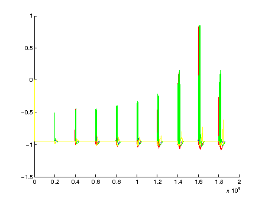
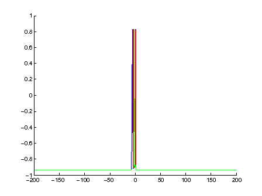
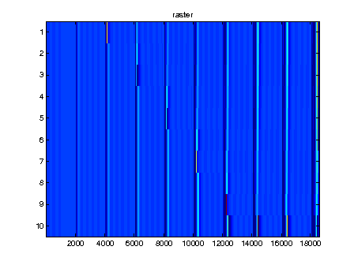

This is the readme for the matlab code associated with the paper: Skorheim SW, Razak K, Bazhenov M (2014) Network models of frequency modulated sweep detection PLoS ONE 9(12):e115196 Usage: Just type: fmsweepdetector at the matlab prompt and after an hour or so you should see the following figures:   